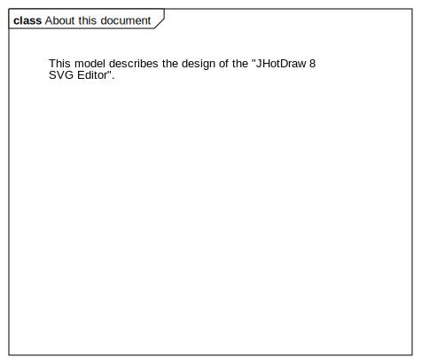
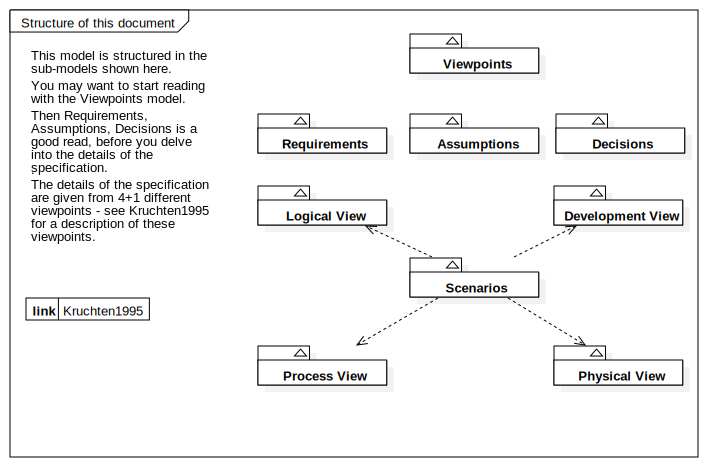

JHotDraw 8 SVG Editor
UMLModel
JHotDraw 8
::
JHotDraw 8 SVG Editor
Description
none
Diagrams

About this document

Structure of this document
Properties
Name
Value
name
JHotDraw 8 SVG Editor
stereotype
null
visibility
public
importedElements
viewpoint
Dependencies
Kruchten1995
Relationships
(JHotDraw 8 SVG Editor→Kruchten1995)
Owned Elements
Requirements
Viewpoints
Scenarios
Logical View
Development View
Process View
Physical View
About this document
Structure of this document
Assumptions
Decisions
(Scenarios→Development View)
(Scenarios→Logical View)
(Scenarios→Process View)
(Scenarios→Physical View)
(JHotDraw 8 SVG Editor→Kruchten1995)